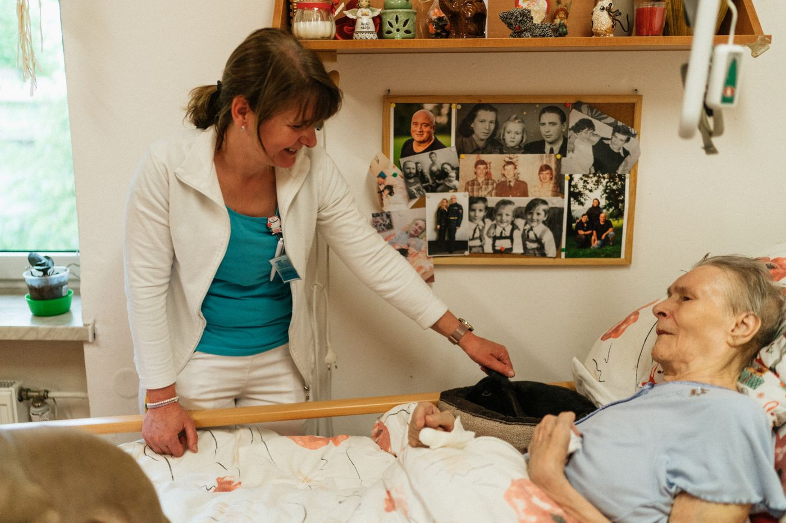

Inyectables
Aplicación intramuscular o subcutánea según indicación médica y receta.
Servicios
Atención programada, con indicación médica cuando corresponde y comunicación directa con la familia. Contanos qué necesitás y te orientamos sin compromiso.

Atención en casa
Coordinamos visitas puntuales o un acompañamiento más prolongado según lo que necesite el paciente y su familia.
Cada atención se acuerda previamente: qué práctica se va a realizar, en qué horario y con qué indicación médica. Después de la visita registramos lo hecho y te contamos cómo sigue.
Aplicación intramuscular o subcutánea según indicación médica y receta.
Limpieza, control y vendaje de heridas simples o postoperatorias.
Control de presión arterial, temperatura, pulso y saturación.
Administración según prescripción, horarios y registro de cada toma.
Cuidado de personas mayores, postoperatorio y apoyo a la familia.
Registro de la evolución y comunicación con el profesional tratante.
Importante: los servicios se coordinan según indicación médica, disponibilidad y evaluación del caso. No realizamos prácticas de urgencia.
Movilidad
Coordinamos traslados programados con ambulancia equipada y personal capacitado. Ideal para consultas, estudios, diálisis y regreso a casa.
Nos ocupamos de la logística para que la familia pueda concentrarse en acompañar al paciente: confirmamos horarios, punto de encuentro y necesidad de acompañamiento.
No es un servicio de emergencias. Ante una urgencia, llamá al 107 (SAME) o al 911.
Contanos la fecha, el horario, el origen y el destino del traslado.
Revisamos la ambulancia y el tipo de acompañamiento que necesita el paciente.
Acordamos el punto de encuentro, el horario y el regreso si hace falta.
Presupuesto sin cargo
Te orientamos sobre el servicio, la disponibilidad y los pasos a seguir. Respondemos de 8 a 20 h.